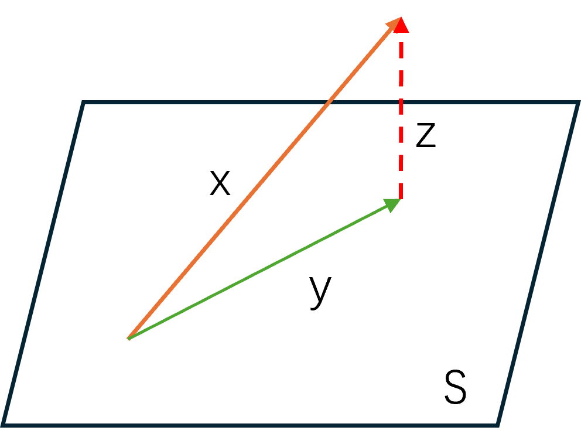

欢迎学习回归分析！在学习主要内容之前，我们需要一些预备知识，方便后续理解重要的公式和定理。当然，这里要讲的前置知识不包括也不限于：
- 微积分
- 线性代数
- 概率论
- 统计推断
- Python
- R
- …
这些内容应当是最基础的知识，不在本讲的讨论范畴。如果有需要请自行学习，或者关注博主，博主后续计划发布基础知识的相关文章。
一、投影矩阵基本知识
1.1 幂等矩阵及其性质
幂等矩阵是指矩阵在进行幂次变换后与原始矩阵一致，也就是：
P2=P
幂等矩阵有如下基本性质：
- 幂等矩阵一定可对角化，特征值非0即1。
- 如果矩阵Pn×n是幂等矩阵，那么In−Pn×n也是幂等矩阵，其中In是单位矩阵。
- 矩阵Pn×n是幂等矩阵的充要条件是：rank(P)+rank(In−P)=n
（不想阅读可跳过）
第3条性质的证明
首先，如果Pn×n是幂等矩阵，那么rank(P)+rank(In−P)=n显然成立（通过特征值来思考），不再详细证明。下面证反之也成立。
设rank(P)=r<n，令S={x∣Px=0}，于是S的维数为dimS=n−r，则可以取S上的一组基ϕ1,⋯,ϕn−r；
同理，令H={x∣(In−P)x=0}，于是S的维数为dimH=r，则可以取H上的一组基ϕn−r+1,⋯,ϕn。
由于这两组基一定是线性无关的，那么令Φ=(ϕ1,⋯,ϕn)，一定有rank(Φ)=n且Φ可逆。于是有：
PΦ=Φ(000Ir)⇒p=Φ(000Ir)Φ−1
于是P2=P，得证。
1.2 投影矩阵及其性质
投影矩阵（Projection Matrix）是指满足以下两个条件的矩阵：
- 对称矩阵，即PT=P
- 幂等矩阵，即P2=P
投影矩阵即是对称幂等矩阵。投影矩阵具有如下性质：
- 投影矩阵是非负定的。
- 如果P1,P2都是投影矩阵，且P1−P2是非负定的，那么一定有：P1P2=P2P1=P2，且P1−P2也是投影矩阵。
（不想阅读可跳过）
第2条性质的证明
要证第二条性质，只需要证P1P2=P2即可，之后剩余部分很容易证明。那么等价于要证明：(P1−In)P2=P2(P1−In)=0，也就是对任意x都有：P2(P1−In)x=0。
由于投影矩阵P1是幂等的，所以其特征值为0或1，那么一定存在这两个解空间：S={y∣P1y−y=0}，H={y∣P1y=0}。
由于P1−P2是非负定的，那么对于∀y∈H，一定有：P1y=0，(P1−P2)y≥0，又由于P2y≥0，所以一定有：P2y=0。
于是，对于∀x=y1+y2，有：
P2(P1−In)x=P2(P1−In)(y1+y2)=0
于是原命题得证。
1.3 减号广义逆
在线性代数中我们学过，对于相容的线性方程组Am×nx=b，如果rank(A)=m=n，则有唯一解x=A−1b。那么如果A矩阵不是奇异矩阵，是否能定义一个广义的解呢？当然可以，我们可以定义矩阵的广义逆来解决。
注意，广义逆有很多种定义方式，但是在回归分析专题当中，我们只需要使用减号广义逆这一种。所以，之后无特别说明，我们就把减号广义逆简称为广义逆。
对于任意矩阵Am×n，如果存在矩阵Bn×m，使得：
Am×nBn×mAm×n=Am×n
那么就称矩阵B是矩阵A的广义逆，记作A−。
根据定义来看，显然A−不止一个，所以A−表示广义逆的集合。
接下来我们看广义逆相关的几个定理：
- 设rank(Am×n)=r，且存在两个可逆矩阵Pm×m和Qn×n使得矩阵A可以被分解为Am×n=Pm×m(Ir000)Qn×n那么A−=Q−1(IrCBD)P−1其中B,C,D是任意矩阵。
- rank(A−)≥rank(A)=rank(A−A)=rank(AA−)
- A(ATA)−AT与广义逆(ATA)−的选取无关。
- rank(A(ATA)−AT)=rank(A)
- A(ATA)−ATA=A,ATA(ATA)−AT=AT
有了广义逆，我们就可以定义任意一个相容的线性方程组Am×nx=b的解：
- 如果固定了一个广义逆，则x=A−b是方程的一个解。
- Ax=0的所有解为：x=(In−A−A)Zn×1，其中Z是任意矩阵。
- Ax=b的所有解为：x=A−b+(In−A−A)Zn×1
1.4 列向量的张成空间
我们已经知道线性空间的定义，接下来我们来看一种特殊的线性空间。
设矩阵Am×n，定义由其列向量(a1,⋯,an)张成的空间称为列向量张成空间，记作：
μ(A)={Ax∣x∈Rn}
列向量张成空间有如下几个性质：
- μ(A)的维数为rank(A)
- μ(A)⊂μ(B)⇔∃C,A=BC
- μ(AT)=μ(ATA)
（不想阅读可跳过）
第2条性质的证明
先从左证右，设Am×n=(a1,⋯,an)，显然对于∀i,1≤i≤n，一定有ai∈μ(A)，根据μ(A)⊂μ(B)就有ai∈μ(B)，则∃yi,ai=Byi；
再从右证左，对于∀y∈μ(A),∃x,y=Ax，又∃C,A=BC，则y=BCx，把Cx看作整体，于是y∈μ(B)。证毕。
1.5 正交补
接下来分别定义向量和矩阵的正交补。
首先，对于向量x,y，如果内积(x,y)=0，则称x与y正交，记作x⊥y。
再令集合S，若∀y∈S,x⊥y，则记作x⊥S，定义正交补集S⊥={x∣x⊥S}。
对于线性空间下的正交补，有：
- S⋂S⊥={0}
- S⨁S⊥=Rn
- (S⊥)⊥=S
下面给一个例子。例：设集合S=μ(An×m)⊂Rn，且rank(A)=m，证明：S⊥=μ(B)，其中B=In−A(ATA)−1AT。
首先，由于dim(S⊥)=dim(B)=n−m，因此只需证S⊥⊂μ(B)即可证明原命题。
由于S=μ(A)，则∀x∈S,∃b,x=Ab；
再令向量y满足(x,y)=0，得到yTx=yTAb=0，也即ATy=0；
取AT的一个广义逆A(ATA)−1，于是可以得到y的解集为
y=[In−A(ATA)−1AT]Z=BZ∈μ(B)
于是原命题得证。
有了向量的正交补之后，我们继续定义矩阵的正交补。
设矩阵A的秩rank(An×m)=r，若存在矩阵Bn×(n−r)满足：
- ATB=0
- rank(B)=n−r
则称B为A的正交补，记作B=A⊥。
从定义中可以看到，A⊥是所有满足ATB=0的B中秩最大的矩阵，即ATx=0的解的一组基。
矩阵的正交补有如下性质：
- μ(A⊥)=μ(A)⊥
- μ(A⊥)⨁μ(A)=Rn
（不想阅读可跳过）
第1条性质的证明
下面只证第1个性质，如果证明成功，那么第2个性质也就显然了。
首先，dim μ(A⊥)=dim μ(A)⊥=n−rank(A)，所以只需证μ(A⊥)⊂μ(A)⊥。
对于∀x∈μ(A⊥),∃a,x=A⊥a；
对于∀y∈μ(A),∃b,y=Ab；
由于(x,y)=(A⊥a,Ab)=(Ab)TA⊥a=bTATA⊥a=0
则μ(A⊥)⊂μ(A)⊥。证毕。
1.6 投影与正交投影
有了之前的各种定义，最后我们来说明什么是投影。
设向量x∈Rn，线性子空间S⊂Rn。如果x存在唯一分解x=y+z使得y∈S,z∈S⊥，则称y是x在空间S上的投影。
从定义来看似乎有点抽象，但是画个示意图就清楚了：

如图所示，向量x被分解为y+z，并且向量y在线性空间S上，向量z垂直于线性空间S，所以称y是x在空间S上的投影。
在代数上，这种投影是线性的，即Rn→S,x→y，因此这个过程可以通过投影矩阵P来完成：
y=Px
可以看到，投影矩阵P的作用就是通过线性变换实现投影变换。如何寻找这个投影矩阵呢？
有一点毋庸置疑：一旦确定了投影平面S，就能确定投影矩阵，因为某个向量在某个平面上的投影是唯一确定的（上述定义中提到”唯一分解“）。
既然这个投影平面是个线性空间，那么就应该可以使用某一个矩阵A通过线性变换来生成。矩阵A可以生成的线性空间平面有无数多个，那么我们想找的平面肯定要使得原始向量和投影向量之间的差距最小，也就是使得z最短，这样才能在投影平面中尽可能多的保留x的信息。
能找到这样的平面吗？当然能，因为可以证明，对任意x∈Rn有：
∣∣x−PAx∣∣=y∈μ(A)inf∣∣x−y∣∣
也就是说，当这个投影在μ(A)平面上运动时，投影是最小的，而这个投影我们称之为正交投影。
那么接下来的任务就是，如何求任意一个向量在μ(A)上的投影。这里我们直接给出结论，如果要把一个向量正交投影在μ(A)平面上，那么对应的投影矩阵PA有表达式：
PA=A(ATA)−AT
这个矩阵其实你在1.3节中已经见过，这个PA被称为正交投影矩阵。当然，PA一定是对称幂等的。
二、多元正态分布基础理论
你可能在概率论中已经了解过正态分布甚至多元正态分布，这里进行回顾或补充；如果没有接触过，这也是补充。
2.1 多元正态分布的三种描述形式
第一种描述形式，即直接通过正态分布的概率密度函数来完成。设随机变量X服从多元正态分布：X∼Nn(μ,Σ)，其中μ=(μ1,⋯,μn)T，Σ是协方差阵，那么其概率密度函数为：
f(X∣μ;Σ)=(2π)n/2∣Σ∣1/21exp[−21(X−μ)TΣ−1(X−μ)]
这种表示方法虽然直接，但是也比较繁琐；同时没办法限制协方差阵的正定情况。
第二种描述形式，设随机变量U∼Nr(0,Ir)，如果存在非随机的矩阵An×r且rank(A)=r，使得X=AU+μ，那么X∼Nn(μ,Σ)，且EX=μ，Σ=AAT。
这种描述方法限制了协方差阵Σ≥0，但是并不能保证其可逆。
第三种描述形式是最推荐的，也就是使用特征函数。
（不想阅读可跳过）
回顾：特征函数
一个随机变量的特征函数完全定义了其概率分布，没有任何限制。定义一个一维随机变量X的特征函数为：
φX(t)=E(eitX)
其中t是实数自变量，i是虚数单位。
如果你了解矩母函数（矩生成函数），那么就有：
φX(t)=MX(it)
对于累积分布函数FX(x)，特征函数为：
φX(t)=E(eitX)=∫eitxdFX(x)
如果概率密度函数存在，那么特征函数为：
φX(t)=E(eitx)=∫eitxfX(x)dx
设随机变量X∼Nn(μ,Σ)，那么其特征函数可以表示为：
φX(t)=exp[itTμ−21tTΣt]
2.2 多元正态分布的性质
下面介绍关于多元正态分布的6条性质，这些性质在后续的分析中会非常有用。
- 多元正态分布的任意边际分布为相应的多元正态分布。
- 如果X∼Nn(μ,Σ)，那么Y=AX+b∼N(Aμ+b,AΣAT)
- 如果(X1T,X2T)T是多元正态分布，那么Cov(X1,X2)=0⇔X1,X2独立
- X∼Nn(μ,Σ)⇔∀t,tTX∼N(tTμ,tTΣt)，高维转一维
- 如果把多元正态分布X∼Nn(μ,Σ)分块为(X1X2)，那么条件分布X1∣X2也是多元正态分布，且E=μ1+Σ12Σ22−1(x2−μ2)，Var=Σ11−Σ12Σ22−1Σ21
- 设(x1,x2,x3,x4)T的联合分布是零均值的正态分布，那么有：Ex1x2x3x4=Ex1x2Ex3x4+Ex1x3Ex2x4+Ex1x4Ex2x3
下面挑选3条性质进行证明，剩余性质证明比较简单或者过于复杂。
性质1：
对∀k≤n，取{p1,⋯,pk}⊂{1,⋯,n}；
令Y=(Xp1,⋯,Xpk)T，S=(tp1,⋯,tpk)T，那么特征函数为
φY(t)=EeiSTY=Eei∑i=1ktpiXpi
根据多元正态分布：
φX(t)=Eei∑j=1ntjXj
当j=pj时是多元正态分布，而当j=pj时直接取tj=0。证毕。
性质2：Y的特征函数为
φY(t)=EeiST(AX+b)=EeiSTAXeiSTb=exp[iSTAμ−21STAΣATS+iSTb]=exp[iST(Aμ+b)−21STAΣATS]
其中S=(t1,⋯,tn)T，因此Y∼Nn(Aμ+b,AΣAT)。
性质6：给出联合分布的特征函数
φ(t1,t2,t3,t4)=exp(−21tTΣt)=exp(−21k=1∑4l=1∑4σkltktl)
先对t1求一阶偏导：
∂t1∂φ=−φl=1∑4σ1ltl
再对t2求二阶偏导：
∂t1∂t2∂2φ=−∂t2∂φl=1∑4σ1ltl−φσ12
再对t3求三阶偏导：
∂t1∂t2∂t3∂3φ=−∂t2∂t3∂2φl=1∑4σ1ltl−∂t2∂φσ13−∂t3∂φσ12=∂t3∂φl=1∑4σ2ltll=1∑4σ1ltl+φl=1∑4σ1ltlσ23+φl=1∑4σ2ltlσ13+φl=1∑4σ3ltlσ12
于是有：
Ex1x2x3x4=∂t4∂t3∂t2∂t1∂φ(t)t=0=σ14σ23+σ24σ13+σ34σ12
又因为
Exkxl=−∂tk∂tl∂φ(t)t=0=−σkl
带入得证。
三、随机变量的二次型
相信你在线性代数中已经学习过二次型的概念，那么如果把一个简单变量换成随机变量，是否具有二次型？当然有。
3.1 随机变量的二次型
我们首先回顾向量的二次型是如何定义的。
设矩阵An×n是对称的，Xn×1为向量，那么称XTAX是向量X的二次型。
那么，如果把X定义为n维随机向量，那么上述定义就变成随机变量的二次型了。
如果随机向量X具有均值μ，协方差阵Σ，那么一定有：
E(XTAX)=tr(AΣ)+μTAμ
（不想阅读可跳过）
证明：
令Y=X−μ，那么EY=0，Cov(Y)=Σ，于是：
XTAX=(Y+μ)TA(Y+μ)
那么E(XTAX)=E(YTAT)+μTAμ。
由于YTAY=tr(YTAY)=tr(AYYT)，于是：
E(XTAX)=tr(A)E(YYT)+μTAμ=tr(AΣ)+μTAμ
特别地，如果X∼Nn(μ,Σ)，还另有两个结论：
Cov(X,XTAX)Var(XTAX)=2ΣAμ=2tr(AΣ)2+4μTAΣAμ
（不想阅读可跳过）
证明1：
令Y=X−μ，那么Y∼Nn(0,Σ)，于是：
Cov(X,XTAX)=Cov(Y+μ,(Y+μ)TA(Y+μ))=Cov(Y,YTAY+2YTAμ)=E(YYTAY)+2E(YYTAμ)=E(YYTAY)+2ΣAμ
由于E(YYTAY)是奇数阶矩且EY=0，所以原命题得证。
证明2：根据Var(XAX)=E(XTAX)2−[E(XTAX)]2，有
E(XTAX)2=E[(Y+μ)TA(Y+μ)]2(1)
由于
E(YTAY)2E(μTAY)2E(μTAYYTAY)=E(i=1∑nj=1∑nk=1∑nl=1∑naijaklYiYjYkYl)=[tr(AΣ)]2+2tr(AΣ)2=uTAE(YYTAμ)=μTAΣAμ=0
带入(1)式即证明原命题。
3.2 随机变量二次型与卡方分布
相信你已经知道卡方分布与正态分布的关系，即标准正态分布的平方和。如果写成向量形式，就是：设多元随机变量X=(x1,⋯,xn)T∼Nn(0,In)，那么有
Y=XTX∼χn2
由于协方差阵是单位阵，所以称这种卡方分布为中心化卡方分布。
进一步地，如果多元随机变量的均值不都是0，即X∼Nn(μ,In)，那么有
Y=XTX∼χn,λ2
其中λ=μTμ，称为非中心化参数，而该卡方分布也被称为非中心化卡方分布。
非中心化的卡方分布是更一般的，具有如下性质：
- E=n+λ，Var=2n+4λ
- 可加性：设随机变量Yi∼χni,λi2，Yi相互独立，则∑i=1kyi∼χ∑i=1kni,∑i=1kλi2
- 特征函数为φ(t)=(1−2it)−n/2eiλt/(1−2it)
这3条性质都比较简单，其中第一条可以使用3.1中的结论，令A=In即可。
到这里，相信你会问：如果X∼Nn(μ,Σ)呢？在说明这个问题之前，先补充另外一个性质。
如果X∼Nn(μ,In)，设矩阵An×n是对称阵，那么XTAX也服从卡方分布当且仅当A是秩为r的幂等矩阵：
XTAX∼χr,μTAμ2⇔A is Idempotent and rank(A)=r
有了这个定理之后，我们就可以处理X∼Nn(μ,Σ)的情况了。设Σ>0，矩阵An×n是对称阵，那么XTAX服从卡方分布的充要条件是：
- AΣ是幂等矩阵且rank(A)=r
- ΣA是幂等矩阵且rank(A)=r
- Σ是A的一个广义逆且rank(A)=r
这三个充要条件满足任意一个即可。
这里不做证明，可以给个思路，即构造Y=Σ−21X∼N(Σ−21μ,In)。
针对XTAX这样的形式，我们做一个可加性的推广。设X∼Nn(μ,In)，矩阵A,A1都是对称阵，且XTAX∼χr,μTAμ2。如果XTAX=XTA1X+XTA2X且满足XTA1X∼χs,μTA1μ2，那么有以下结论：
- XTA2X∼χr−s,μTA2μ2
- XTA1X与XTA2X相互独立
- A1A2=0
同理，如果X∼Nn(μ,Σ)，只需要把第3个结论改成A1ΣA2=0即可，其余结论不变。
3.3 正态分布线性型与随机变量二次型的独立性问题
在这一节，我们需要补充两个独立性的问题，可以帮助我们理解该专题后续的内容。
- 设X∼Nn(μ,In)，矩阵A是对称阵，如果存在矩阵C使得CA=0，那么CX与XTAX是独立的。
注意，这一条是充分条件；如果X∼Nn(μ,Σ)，条件变为CΣA=0。
（不想阅读可跳过）
证明：
设rank(A)=r，根据对称性，一定存在正交阵Q，使得
A=QT(Λr000)Q
其中Λr是对角阵，对角元是A的非重特征值。那么
XTAX=XTQT(Λr000)QX
令Y=QX∼N(Qμ,In)，那么有
XTAX=YT(Λr000)Y
根据CA=CQT(Λr000)Q=0我们可以的得到：
CQT(Λr000)=0
令CQT=(B1B2)，那么有
CQT(Λr000)=(B1Λr0)=0
也就是B1=0。那么最终
CX=CQTQX=CQTY=(0B2)y1⋮yn
CX只与yr+1,⋯,yn有关，所以CX与XTAX独立，证毕。
- 设X∼Nn(μ,In)，矩阵A,B是对称阵，若AB=0，则XTAX与XTBX独立。
同理，如果X∼Nn(μ,Σ)，条件变为AΣB=0。
（不想阅读可跳过）
证明：
为了证明方便，这里假定AB=BA=0，那么存在正交阵Q使得
A=QΛAQT,B=QΛBQT
令Y=QX∼N(Qμ,In)，则有
XTAXXTBX=XTQTΛAQX=i=1∑nλAiγi2=XTQTΛBQX=i=1∑nλBiγi2
由于AB=0，所以ΛAΛB=0，也就是λAiλBi=0，原命题得证。
3.4 多元t分布
前面我们学习了二次型与卡方分布。t分布是与正态分布和卡方分布密切相关的分布，在后续的学习中也非常重要，因此我们再补充一点基础知识。
设随机变量X,Y相互独立，X∼N(δ,1)，Y∼χn2，那么定义t分布为：
t=X/nY∼tn,δ2
称为非中心化t分布。如果δ=0就是中心化t分布。
相信你之前学习过标准化，即σX−μ。那么对于t分布来说，还有一种数据转化方法称为学生化(studentized)。如果随机变量X∼N(μ,σ2)，则定义
σ^n(X−μ)
为学生化。学生化在后续评估模型残差时非常有用。
我们进一步定义多元t分布，即X∼tp(μ,B−1,n)是p维t分布，其中矩阵B是伸缩项。为了更好的理解，我们举一个例子。
设随机变量X∼Np(0,Σ)，Y∼χn2，X,Y相互独立，那么有
t=X/nY∼tp(0,Σ−1,n)
可以看到，相当于把正态分布的协方差项进行了变换，这也就说明了为什么t分布虽然与正态分布很像，但是衰减更慢。
注意，如果X∼Np(μ,Σ)，并没有上述结论！
与多元正态分布一样，多元t分布的任意边际分布、线性变换、条件分布都是t分布，这里不再赘述。
四、指数分布族及其性质
指数分布族是随机变量分布的一类特殊形式，它描述了具有相同分布表达式的一系列分布。如果一维随机变量Y服从指数分布族，那么其概率密度函数可以写作：
f(y∣θ;ϕ)=exp[ϕθy−b(θ)+c(y;ϕ)]
其中θ称为自然参数(Natural Parameter)，是我们感兴趣的参数；ϕ称为散布参数/尺度参数/讨厌参数(Dispersion Parameter)，在特定的分布下应当已知；b(θ)和c(y;ϕ)在具体分布确定后已知表达式。上述概率密度函数被称为典则形式(canonical form)。
下面我们介绍指数分布族的基本性质，之后给出属于指数分布族的常见分布，看看它们是如何匹配这个表达式的。
4.1 指数分布族的性质
有一个显然的性质，即作为概率密度函数，其全积分应当为1：
∫f(y∣θ;ϕ)dy=1
那么显然，使该积分对θ求偏导，结果应当为0：
∂θ∂∫f(y∣θ;ϕ)dy=∂θ∂1=0
如果假定积分和求导可以交换，那么就有下面两个重要性质：
∫∂θ∂f(y∣θ;ϕ)dy∫∂θ2∂2f(y∣θ;ϕ)dy=0=0
于是，我们就可以导出指数分布族的期望和方差了。如果要导出均值，通过f的一阶偏导就可以得到：
∵∂θ∂f(y∣θ;ϕ)=ϕy−b(θ)˙f(y∣θ;ϕ)dy∴∫∂θ∂f(y∣θ;ϕ)=∫ϕy−b(θ)˙f(y∣θ;ϕ)dy=0⇒∫[y−b(θ)˙]f(y∣θ;ϕ)dy=0⇒E[Y−b(θ)˙]=0⇒EY=b(θ)˙
其中，b(θ)˙是b(θ)的一阶导。
同理，再求一次二阶偏导就可以得到方差：
∫∂θ2∂2f(y∣θ;ϕ)=ϕ1∫[−b(θ)¨f(y∣θ;ϕ)+[y−b(θ)˙]f(y∣θ;ϕ)˙]dy=0⇒−b(θ)¨+∫ϕ1[y−b(θ)˙]2f(y∣θ;ϕ)dy=0⇒−b(θ)¨+ϕ1Var(Y)=0⇒Var(Y)=ϕb(θ)¨
其中，b(θ)¨是b(θ)的二阶导。
因此，我们得到了两条重要性质：
EYVar Y=b(θ)˙=ϕb(θ)¨
4.2 常见的指数分布族举例
4.2.1 泊松分布
泊松分布属于指数分布族，因为其概率密度函数可以写作：
f(y∣λ)=y!e−λλy=exp[ylogλ−λ−logy!]
令θ=logλ，那么：
f(y∣θ)=exp[θy−eθ−logy!]
此时，b(θ)=eθ，ϕ=1，c(y;ϕ)=0。
验证一下期望和方差：
b(θ)˙ϕb(θ)¨=eθ=λ=EY=1×eθ=λ=Var Y
4.2.2 正态分布
正态分布也属于指数分布族，因为其概率密度函数可以写作：
f(y∣μ;σ2)=exp{σ2yμ−21μ2−2σ2y2−21log(2πσ2)}
此时，b(θ)=21μ2，ϕ=σ2，c(y;ϕ)=−2σ2y2−21log(2πσ2)。
验证一下期望和方差：
b(θ)˙ϕb(θ)¨=μ=EY=σ2×1=σ2=Var Y
4.2.3 二项分布
二项分布也属于指数分布族。因为其概率密度函数可以写作：
f(y∣n;π)=Cnyπy(1−π)n−y=exp[θy−nlog(1+eθ)+logCny]=f(y∣θ)
其中，θ=log1−ππ。
此时，b(θ)=nlog(1+eθ)，ϕ=1，c(y;ϕ)=logCny。
验证一下期望和方差：
b(θ)˙ϕb(θ)¨=n1+eθeθ=nπ=EY=1×n(1+eθ)2eθ=nπ(1−π)=Var Y
4.2.3 多项分布
多项分布是二项分布的拓展，也属于指数分布族。设响应变量Y有k个状态a1,⋯,ak，取到aj值的概率为πj(j=1,⋯,k−1)，取到ak的概率为1−∑j=1k−1πj。如果令∣π∣=∑j=1k−1πj，∣y∣=∑j=1k−1yj，那么其概率密度函数可以写作：
f(y∣π)=(1−∣π∣)1−∣y∣Πj=1k−1πjyj
若令θj=log1−∣π∣πj，那么πj=1+∑i=1k−1eθieθj，此时有：
f(y∣θ)=exp[θTy−log(1+i=1∑k−1eθi)]
此时，b(θ)=log(1+∑i=1k−1eθi)=−log(1−∣π∣)，ϕ=1，c(y;ϕ)=0。
验证一下期望和方差：
b(θi)˙=1+∑i=1k−1eθieθi=πi=EYiϕb(θ)¨=−(1+∑i=1k−1eθi)2eθieθj=−πiπj, i=jϕb(θ)¨=(1+∑i=1k−1eθi)2eθi(1+∑i=1k−1eθi)−(eθi)2=πi(1−πi), i=j
当i=j时，Var Y=πi(1−πi)；当i=j时，Cov(Yi,Yj)=−πiπj。
至此，预备知识就介绍到这里，接下来我们就要进入回归分析了。